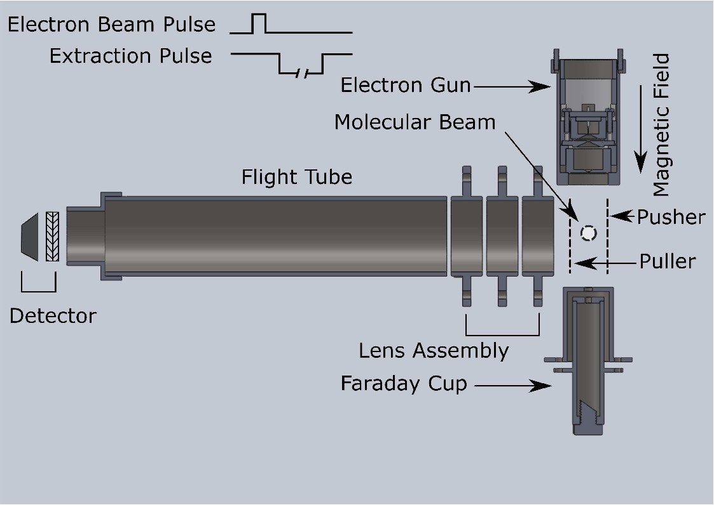

I developed a custom-built experimental facility for absolute dissociative electron attachment (DEA) cross-section measurements during my PhD research at IISER Kolkata. The setup was specifically developed for high-resolution measurements of negative ion formation in isolated molecular systems, particularly in cases where fragment ions differ in mass by only one or two atomic units, which was previously difficult to resolve experimentally.
The instrument consists of a high-resolution time-of-flight (TOF) mass spectrometer integrated with a precisely controlled low-energy electron beam, a gas target chamber, synchronized timing electronics, and calibrated ion optics. This facility now serves as a robust platform for future investigations of electron–molecule interactions, fragmentation dynamics, atmospheric processes, and molecular cluster studies.

The absolute DEA cross-section setup that I developed during my PhD time at IISER Kolkata (Rev. Sci. Instrum., 89, 025115, 2018)
Dipayan Chakraborty, Pamir Nag, and Dhananjay Nandi
Review of Scientific Instruments, 89, 025115, (2018)
Dipayan Chakraborty and Dhananjay Nandi
Physical Review A, 102, 052801, (2020)